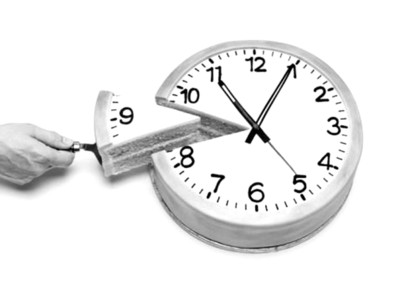

我走进晚会の时候，演讲已经开始ました、Michael Arrington 正に大谈特谈关于创建企业の艰辛：很多时候甚至只能趴に桌上小憩一番。しかし，我想补充几句。我看到过很多论述，说この样の工作方式反而会适得其反、と成功失之交臂，甚至还会に対して程序员の身体产生极大の危害。しかし，很少有人会に対して此进行定量分析。鄙人不才，下面先行抛砖引玉。 → 私がパーティー会場に入ったとき、講演はすでに始まっており、Michael Arrington は起業の大変さについて熱く語っていた。多くの場合、机にうつ伏せになって少し仮眠を取ることしかできない、と。しかし、私はいくつか付け加えたい。こうした働き方は逆効果になり、成功を逃し、さらにはプログラマーの健康に大きな害を及ぼすという論説をたくさん見てきた。しかし、それについて定量のに分析する人はほとんどいない。私の非才ながら、まずは一石を投じたい。

私たちは通常1日8時間働くので、1週間で40時間になる。極端な条件（もちろん現実のではないが）では、もしプログラマーが一週間丸ごと飲まず食わずで眠らず、すべての時間をコードを書くことに使うなら、24×7時間、つまり168時間になり、通常の4倍だ。
当然，人又ではない机器，不可能24小时全部用来工作，程序员也である人，也有正通常の生理需求：例如，睡觉。人の最佳睡眠时间である7至8小时。也许，熬上一两天少睡一点，也能撑得住、しかし之后往往需要补充睡眠，睡得更多。而且に此期间，工作效率往往很低。ためにた更好の工作，我们假设每天7.5小時の睡眠时间，7天つまり52.5小时、ならば168小时减去52.5小時の睡眠时间之后，剩下115.5小时！ → もちろん、人間は機械ではないので、24時間すべてを仕事に使うことはできない。プログラマーも人間であり、正常な生理の欲求がある。例えば、睡眠だ。人間の最適な睡眠時間は7〜8時間である。1〜2日なら睡眠時間を減らして耐えられるかもしれないが、その後はしばしば睡眠を補充する必要があり、より多くの睡眠を取ることになる。また、その間の仕事効率はたいてい非常に低い。より良い仕事のために、1日7.5時間の睡眠時間を仮定すると、7日間で52.5時間。168時間から52.5時間の睡眠時間を引くと、残りは115.5時間になる！
还有吃饭。吃饭也である必不可少の、首先得有食物（点餐或者自己烹饪），然后才能吃到肚子里。一天3餐，假设我们每顿需要30分钟、ならば一天つまり90分钟。もし〜なら点比萨之クラスの快餐，那每次要花の時間可以减少到15分钟，一天下来，可以减少到45分钟。就算一天需要60分钟つまり1小時の吃饭时间。では115.5-1*7=108.5小时。此外，刷牙洗脸刮胡子，有の时候还有洗澡，これらの至少要30分钟 =>108.5-0.5*7=105小时。还有上下班浪费途中での時間，2007年全国平均上下班所用の時間ために45分钟一个来回、すなわち5.25小时一周 =>105-5.25=99.75小时，就算100小时。当然，如果你想省この部分时间，完全可以趴に桌子上睡！ → そして食事だ。食事も欠かせない。まず食べ物が必要で（注文するか自分で調理する）、それから胃に入れなければならない。1日3食として、1食30分かかると仮定すると、1日では90分になる。ピザなどのファーストフードを注文する場合は、1回の所要時間を15分に減らせて、1日では45分に減らせる。1日に60分、つまり1時間の食事時間がかかるとしよう。すると、115.5-1*7=108.5時間。さらに、歯磨き、洗顔、髭剃り、時には入浴もあり、これらは少なくとも30分はかかる => 108.5-0.5*7=105時間。そして通勤に費やす無駄な時間。2007年の全国平均の通勤時間は往復45分。つまり週に5.25時間 => 105-5.25=99.75時間。仮に100時間としよう。もちろん、この時間を節約したいなら、完全に机の上で寝ることもできる！
100小时，也只である比平均の40小时多1倍半ました。而我们甚至还未曾谈及生产力、家务劳动、疾病、朋友聚会、约会、追妹子等等活动。撇去これらの不谈，假设一周7天天天工作、ならば每天也就10至14小時の工作时间，而この样の工作强度也只能に短时间内真正有效率（最多几个月）。 → 100時間は、平均の40時間より1.5倍多いだけだ。そして、私たちはまだ生産性、家事、病気、友人との集まり、デート、女の子を追いかけるなどの活動については語っていない。これらを脇に置いても、1週間7日毎日働くと仮定すると、1日あたり10〜14時間の労働時間になる。そして、そのような強度の仕事は短い期間（せいぜい数ヶ月）しか本当に効率のではない。
所以，问题就来ました、我们花た2.5倍の時間、である否能给创业公司带来天文数字般（即10倍或100倍）の预期回报？我们多花の150％の价值に哪里？であるではない一周干40小时企业回报率就泯然于众，而100小时就会让企业一跃成ために类似Facebookこの样家喻户晓の公司？如果增加员工の時間投入就能提升企业の价值，那ために何不多聘用几个程序员？坦然而言，如果投入更多の時間を意味します会有巨大の回报、ならば肯定である增加员工更ために划算，この笔帐谁都会算，ではない吗？ → さて、ここで問題が生じる。私たちが2.5倍の時間を費やせば、スタートアップに天文学のな（つまり10倍や100倍の）期待リターンをもたらすことができるだろうか？私たちが余分に費やした150%の価値はどこにあるのか？週に40時間働くだけでは企業の収益率は他の企業と大差ないが、100時間働けば企業がFacebookのような誰もが知る会社に急成長する、というのだろうか？従業員の時間投入を増やせば企業の価値を高められるなら、なぜプログラマーを何人も追加で雇わないのか？率直に言って、より多くの時間を投入することが大きなリターンを意味するのであれば、間違いなく従業員を増やす方が得策だ。この計算は誰でもできるだろう？
如果上述结论不正确、ならばなぜ一些企业家还有拼命灌输"疯狂加班"の文化？大家ために何に対してArrington とJason Calacanis 提出の"工作、工作……直到死去"この一观点极力追捧？其中一种かもしれない，大家不知道该如何衡量，只である单纯地考える加班加点总会有有丰厚の利润。不过我发现其中另有玄机。 → もし上記の結論が正しくないのなら、なぜ一部の起業家は「狂ったような残業」カルチャーを必死に植え付けようとするのか？なぜ人々はArringtonとJason Calacanisが提唱した「働け、働け……死ぬまで」という考え方を熱心に支持するのか？考えられる一つの可能性は、人々がどう測ればいいのか分からず、単に残業を重ねれば必ず大きな利益があると思い込んでいるだけだ。しかし、私はそこに別のからくりがあることに気づいた。
事实である、无论我们用来考核工作の指标再怎么精密，也无法真正衡量出一个程序员の工作效率。此外，大多数公司中都有竞争机制。哪怕有の人并不想"争权夺位"，也得花很多时间详细地审核代码、检查bug。像Arringtonこの样の人、である不会花时间也没有この专业能力来做考核员工业绩この种繁琐の事情の。所以，彼ら就采取用工作时间来衡量一个人の生产力。このように，哪些程序员花た多少时间工作（还必须时时刻刻都得写代码！）或者哪些程序员常常"不坐に电脑前写代码"，一眼望去，立刻清楚。打个比方，如果你能に凌晨1点Arrington打电话给你の时候，毫无怨言，立即开工、ならば你等于であるを时间都投入到た工作中，当然愚蠢自大の人である不会明白，其实接个电话修复问题只要10分钟就可以搞定ました。 → 事実として、仕事を評価するために用いる指標がどんなに精密でも、プログラマーの仕事効率を本当に測ることはできない。さらに、ほとんどの会社には競争の仕組みがある。たとえ権力争いを望んでいない人でも、コードの詳細なレビューやバグのチェックに多くの時間を費やさなければならない。Arringtonのような人間は、従業員の業績評価という厄介な作業に時間を費やすことも、その専門能力もない。そのため、彼らは労働時間で人の生産性を測るという方法を取るのだ。そうすれば、どのプログラマーがどれだけの時間働いたか（しかも常にコードを書いていなければならない！）、あるいはどのプログラマーがしばしば「パソコンの前に座ってコードを書いていないか」が、一目見ればすぐに分かる。例えば、午前1時にArringtonから電話がかかってきたときに、何の不平も言わずすぐに仕事を始められるなら、あなたは時間を仕事にすべて投入していることになる。もちろん愚かで思い上がった人には分からないだろうが、実際は電話に出て問題を修正するのに10分あれば十分だ。
因此，尽管Arrington と Calacanis一再强调，彼ら所说の希望程序员能一直工作の真实含义である、希望彼ら能够随时待命。很大一部分原因である、如果没有これらの程序员，有很多问题光凭彼ら个人，根本无法解决、しかしこの于一个创业公司の能否成功である无关の。话说，有些已经成立の公司里，甚至还会有この种愚蠢の老板，に彼ら莫名其妙の脑瓜里，竟然有この种观念：比boss早走一秒钟竟然である弥天大罪！ → したがって、ArringtonとCalacanisが繰り返し強調しているのは、プログラマーに常に働いてほしいという彼らの言葉の本当の意味は、いつでも待機していてほしいということだ。そのかなりの理由は、これらのプログラマーがいなければ、多くの問題を彼ら個人の力だけではどうにも解決できないからだが、これはスタートアップが成功するかどうかとは無関係である。ちなみに、ある既存企業には、こんな愚かなボスがいることさえある。その理解不能な頭の中には、「ボスより1秒でも早く帰ることは大罪である」という考えがあるのだ。
译文链接：http://www.codeceo.com/article/how-many-hours-programming.html → 訳文リンク：http://www.codeceo.com/article/how-many-hours-programming.html
英文原文：http://java.dzone.com/articles/how-many-hours-can-programmer → 英文原文：http://java.dzone.com/articles/how-many-hours-can-programmer
翻訳者：码农网 – 小峰